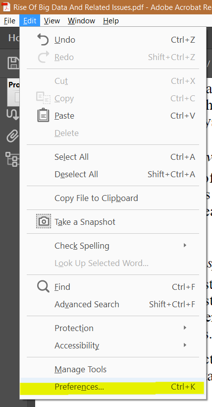
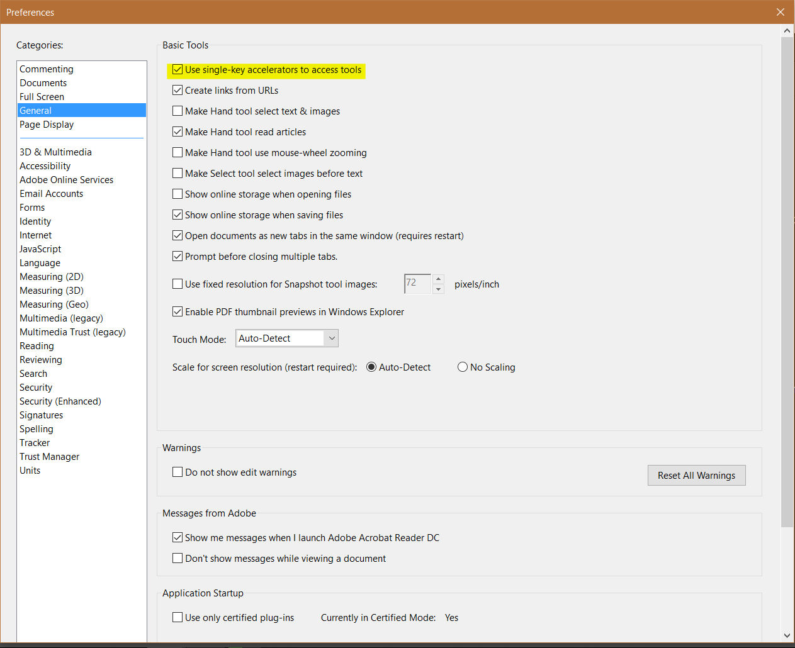

I use Adobe Acrobat Reader DC on a daily basis and use it to copy text from,
highlight text in, and add comments to PDF files. Adobe thought it would be a
good idea to disable keyboard shortcuts as the default option. I don’t know
why this is so.
Anyway, on to the remedy. The version of Adobe Acrobat Reader DC I’m using for
this tutorial is 15.020.20042. Access the Preferences via Edit > Preferences
or the keyboard shortcut Ctrl + K.

Acrobat Reader Edit Menu
Go to the General category and tick the Use single-key accelerators to
access tools option as shown below. Yes, you read that right, keyboard
shortcuts are now called single-key accelerators. Whose idea was that? They
should be fired. This change in name was why it took me longer than usual to
find this option.

Acrobat Reader Preferences Window
If this is the first time you’ve opened the Preferences, take a look around,
you might find other things that make your life easier. You and I both know,
that you’ll probably look for a new PDF viewer before checking here to curb Acrobat
Reader woes.
Now that you’ve enabled single-key accelerators, here’s a list of the common
tools I use with their respective accelerators.
V Select Tool. The cursor icon in the toolbar.H Hand Tool.U Highlight Tool.Ctrl + E Not an accelerator per se. Opens the selected Tool properties and changes when the Tool changes. Used in conjunction with the Highlight tool enables one to change colors.